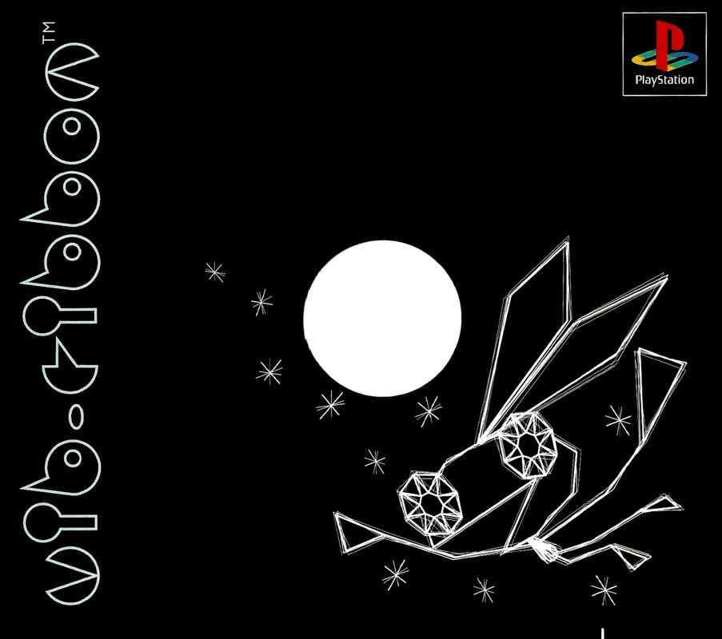
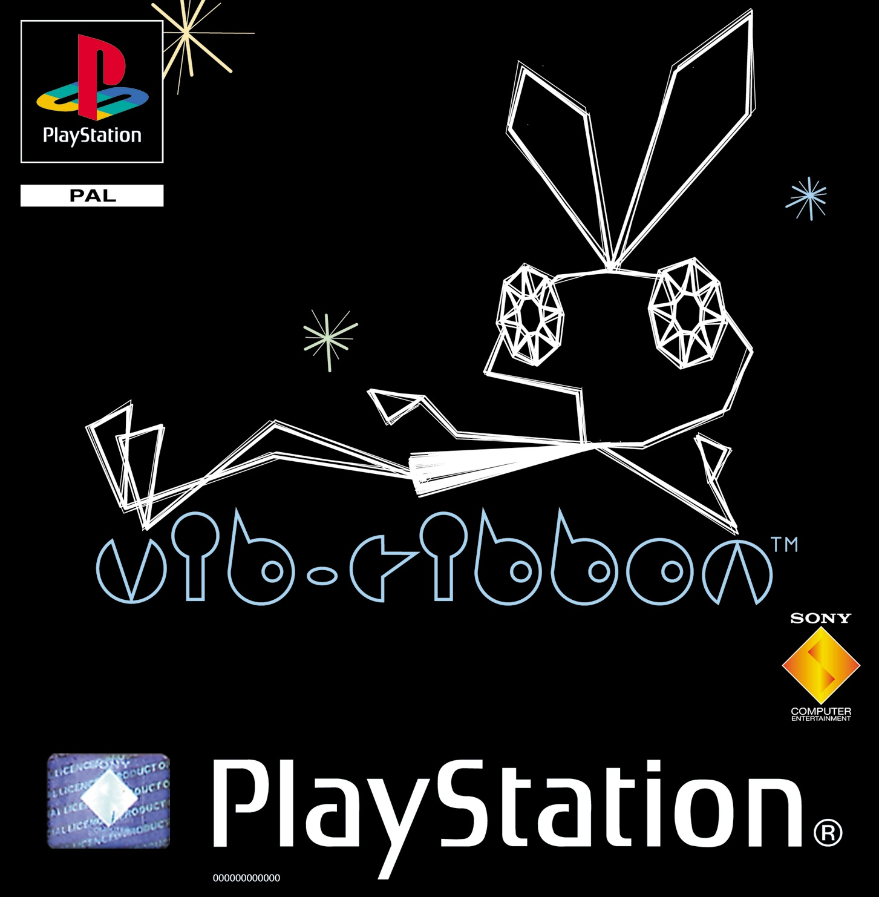
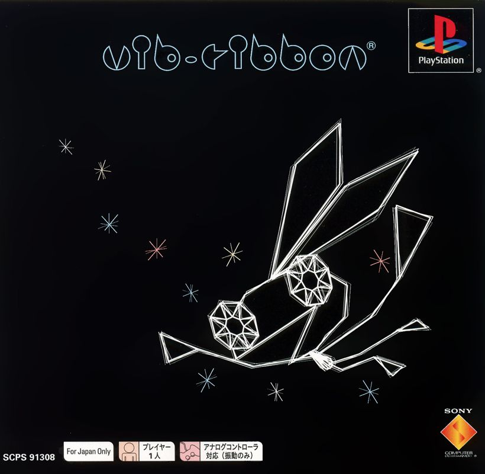

Welcome
Vib-Ribbon is a rhythm game released by Sony for the original PlayStation, built by the Tokyo studio NanaOn-Sha. If you have heard of their earlier work, PaRappa the Rapper, you already know part of the story: the same designer, Masaya Matsuura, is the mind behind both projects, and the two games share a willingness to strip music-based play down to something unusually playful.
What sets Vib-Ribbon apart is how little it puts on the screen. The entire visual language is a single white line, scribbled with obstacles, traced from left to right while a small rabbit named Vibri hops along it. There is no scenery, no HUD, and almost no color. The challenge lives entirely in the rhythm and the shapes.



The project did not begin as a retail game at all. It started life as a pitch for a Mercedes-Benz A-Class commercial in the late 1990s. When that partnership fell through, NanaOn-Sha kept building. By the time the game reached Japanese shelves on December 9, 1999, it had grown into something no ad could contain.
Europe received its own release on September 1, 2000, but players in North America had to wait. The PlayStation-era version never shipped on disc in the US; it was not until Sony quietly put the game on PSN in October 2014 that the region finally got an official copy.